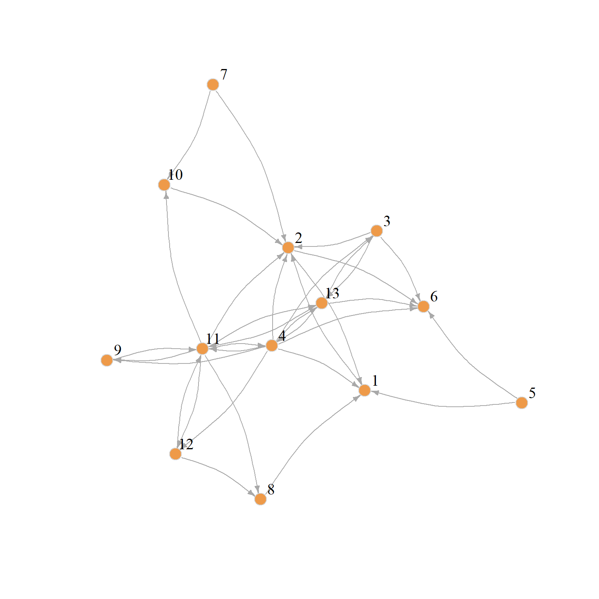
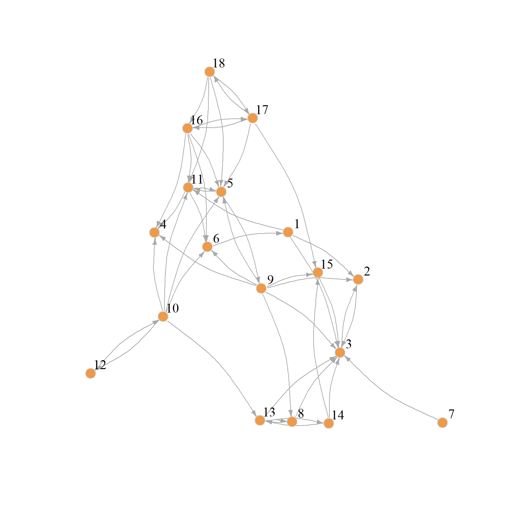

blondel.sim <- function(A, B) {
K <- matrix(1, nrow(B), nrow(A))
k <- 1
diff <- 1
old.diff <- 2
while (diff != old.diff | k %% 2 == 0) {
old.diff <- diff
K.old <- K
K <- (B %*% K.old %*% t(A)) + (t(B) %*% K.old %*% A)
K <- K/norm(K, type = "F")
diff <- abs(sum(abs(K)) - sum(abs(K.old)))
k <- k + 1
}
K <- K/max(K)
return(list(K = K, k = k, diff = diff))
}Role Similarity Across Graphs
Sometimes we may want to figure out how similar a given node’s position in one social network is to that of another node in a different network. This calls for a method that could allow us to compare how similar a node in one graph is to other nodes in another graph.
A particularly interesting version of this problem arises when we have information on the same set of nodes across different set of relations. In that case, we may be interested in answering the question as to whether nodes occupy similar or dissimilar positions across the networks defined by the different relations.
Blondel et al. (2004) describe an approach that can help us make headway on this problem. They use a similar iterative procedure that we saw can be used to compute status scores from directed graphs (like PageRank and HITS) but this time to compute similarity scores between pairs of nodes across graphs.
The idea, just like with the status scores, is that the two set of nodes in each graph start with the same similarity scores, and then we update them as we traverse the connectivity structure of the two graphs.
So let’s say the adjacency matrix of the first graph is \(\mathbf{A}\) and that of the second graph is \(\mathbf{B}\). The first graph has \(n_A\) number of nodes and the corresponding quantity in the second graph is \(n_B\) our target similarity matrix \(\mathbf{Z}\), comparing the node sets in the two graphs, will therefore be of dimensions \(n_A \times n_B\).
We initialize \(z_{ij}(0) = 1\) for all \(i\) and \(j\); that is, \(\mathbf{Z}(0)\) is a matrix full of ones. At each time step subsequent to that, we fill up the \(\mathbf{Z}\) matrix with new values according to:
\[ \mathbf{Z}(t + 1) = \mathbf{B}\mathbf{Z(t)}\mathbf{A}^T + \mathbf{B}^T\mathbf{Z(t)}\mathbf{A} \]
To ensure convergence, we then normalize the \(\mathbf{Z}\) matrix after every update using our trusty Euclidean norm:
\[ \mathbf{Z}(t > 0) = \frac{\mathbf{Z}}{||\mathbf{Z}||_2} \]
Let us see how this would work with real data. Let us start with the case of the same set of nodes measured across two different relational networks. Here, we will use Krackhardt’s high tech manager’s data which contains directed adjacency relations based on both friendship and advice nominations.
library(networkdata)
library(igraph)
library(ggraph)
set.seed(123)
plot(ants_1,
edge.arrow.size=.5,
vertex.color="tan2",
vertex.size=8, vertex.frame.color="gray",
vertex.label.color="black", vertex.label.cex=1,
vertex.label.dist=2, edge.curved=0.2)
plot(ants_2,
edge.arrow.size=.5,
vertex.color="tan2",
vertex.size=8, vertex.frame.color="gray",
vertex.label.color="black", vertex.label.cex=1,
vertex.label.dist=2, edge.curved=0.2)

A function to compute the Blondel similarity can be written as:
A <- as.matrix(as_adjacency_matrix(flo_marriage))
B <- as.matrix(as_adjacency_matrix(flo_business))
K <- round(blondel.sim(A, B)[[1]], 4)
K Acciaiuoli Albizzi Barbadori Bischeri Castellani Ginori Guadagni
Acciaiuoli 0.0000 0.0000 0.0000 0.0000 0.0000 0.0000 0.0000
Albizzi 0.0000 0.0000 0.0000 0.0000 0.0000 0.0000 0.0000
Barbadori 0.2546 0.4700 0.4078 0.5448 0.4990 0.1443 0.5570
Bischeri 0.2245 0.4145 0.3597 0.4805 0.4401 0.1273 0.4912
Castellani 0.2551 0.4709 0.4086 0.5458 0.4999 0.1446 0.5580
Ginori 0.1243 0.2294 0.1991 0.2659 0.2436 0.0705 0.2719
Guadagni 0.1533 0.2831 0.2456 0.3281 0.3005 0.0869 0.3354
Lamberteschi 0.2836 0.5236 0.4544 0.6070 0.5560 0.1608 0.6205
Medici 0.1573 0.2903 0.2519 0.3366 0.3083 0.0892 0.3441
Pazzi 0.0475 0.0876 0.0760 0.1016 0.0930 0.0269 0.1038
Peruzzi 0.3071 0.5669 0.4920 0.6572 0.6020 0.1741 0.6719
Pucci 0.0000 0.0000 0.0000 0.0000 0.0000 0.0000 0.0000
Ridolfi 0.0000 0.0000 0.0000 0.0000 0.0000 0.0000 0.0000
Salviati 0.0475 0.0876 0.0760 0.1016 0.0930 0.0269 0.1038
Strozzi 0.0000 0.0000 0.0000 0.0000 0.0000 0.0000 0.0000
Tornabuoni 0.0475 0.0876 0.0760 0.1016 0.0930 0.0269 0.1038
Lamberteschi Medici Pazzi Peruzzi Pucci Ridolfi Salviati Strozzi
Acciaiuoli 0.0000 0.0000 0.0000 0.0000 0 0.0000 0.0000 0.0000
Albizzi 0.0000 0.0000 0.0000 0.0000 0 0.0000 0.0000 0.0000
Barbadori 0.1711 0.8290 0.0863 0.5312 0 0.6580 0.2811 0.6858
Bischeri 0.1509 0.7311 0.0761 0.4684 0 0.5803 0.2479 0.6048
Castellani 0.1714 0.8305 0.0865 0.5322 0 0.6592 0.2816 0.6871
Ginori 0.0835 0.4046 0.0421 0.2593 0 0.3212 0.1372 0.3348
Guadagni 0.1030 0.4993 0.0520 0.3199 0 0.3963 0.1693 0.4130
Lamberteschi 0.1906 0.9236 0.0962 0.5918 0 0.7331 0.3132 0.7640
Medici 0.1057 0.5121 0.0533 0.3281 0 0.4065 0.1737 0.4236
Pazzi 0.0319 0.1545 0.0161 0.0990 0 0.1226 0.0524 0.1278
Peruzzi 0.2063 1.0000 0.1041 0.6408 0 0.7937 0.3391 0.8273
Pucci 0.0000 0.0000 0.0000 0.0000 0 0.0000 0.0000 0.0000
Ridolfi 0.0000 0.0000 0.0000 0.0000 0 0.0000 0.0000 0.0000
Salviati 0.0319 0.1545 0.0161 0.0990 0 0.1226 0.0524 0.1278
Strozzi 0.0000 0.0000 0.0000 0.0000 0 0.0000 0.0000 0.0000
Tornabuoni 0.0319 0.1545 0.0161 0.0990 0 0.1226 0.0524 0.1278
Tornabuoni
Acciaiuoli 0.0000
Albizzi 0.0000
Barbadori 0.6277
Bischeri 0.5536
Castellani 0.6289
Ginori 0.3064
Guadagni 0.3781
Lamberteschi 0.6994
Medici 0.3878
Pazzi 0.1170
Peruzzi 0.7572
Pucci 0.0000
Ridolfi 0.0000
Salviati 0.1170
Strozzi 0.0000
Tornabuoni 0.1170 g5 <- make_empty_graph(2)
g5 <- add_edges(g5, c(1,2))
A <- as.matrix(as_adjacency_matrix(g5))
B <- as.matrix(as_adjacency_matrix(ht_advice))
K <- round(blondel.sim(A, B)[[1]], 4)
K/max(K) [,1] [,2]
[1,] 0.3703 0.7725
[2,] 0.1761 0.9874
[3,] 0.8408 0.3518
[4,] 0.7088 0.4898
[5,] 0.8351 0.3258
[6,] 0.0649 0.6359
[7,] 0.4921 0.6757
[8,] 0.4900 0.7018
[9,] 0.7735 0.2861
[10,] 0.6722 0.6069
[11,] 0.2065 0.7589
[12,] 0.1222 0.4914
[13,] 0.3306 0.3185
[14,] 0.2788 0.6683
[15,] 1.0000 0.2639
[16,] 0.2736 0.5631
[17,] 0.3129 0.6365
[18,] 0.7999 0.8603
[19,] 0.5809 0.3185
[20,] 0.6871 0.5815
[21,] 0.6002 0.7658 [,1] [,2]
[1,] 0.37029532 0.7823747
[2,] 0.17610741 1.0000000
[3,] 0.84083018 0.3562974
[4,] 0.70884756 0.4960672
[5,] 0.83512603 0.3300078
[6,] 0.06491864 0.6440539
[7,] 0.49205367 0.6843548
[8,] 0.49004082 0.7107879
[9,] 0.77349356 0.2897921
[10,] 0.67224809 0.6146902
[11,] 0.20646705 0.7685749
[12,] 0.12219963 0.4976389
[13,] 0.33064969 0.3225509
[14,] 0.27883157 0.6768727
[15,] 1.00000000 0.2672473
[16,] 0.27356728 0.5702471
[17,] 0.31290687 0.6446488
[18,] 0.79991950 0.8713331
[19,] 0.58093604 0.3225509
[20,] 0.68713134 0.5888805
[21,] 0.60021247 0.7756042References
Blondel, Vincent D, Anahı́ Gajardo, Maureen Heymans, Pierre Senellart, and Paul Van Dooren. 2004. “A Measure of Similarity Between Graph Vertices: Applications to Synonym Extraction and Web Searching.” SIAM Review 46 (4): 647–66.